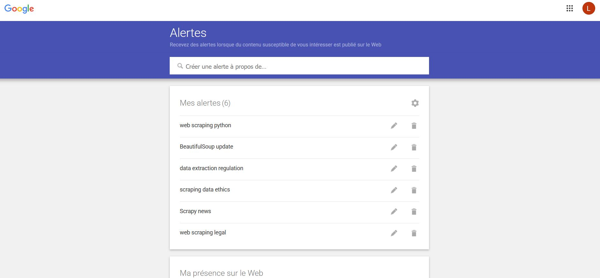
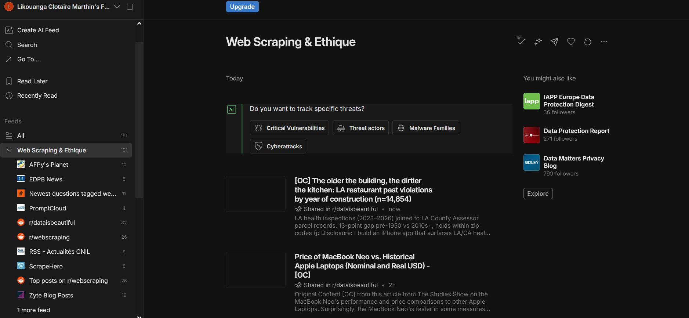
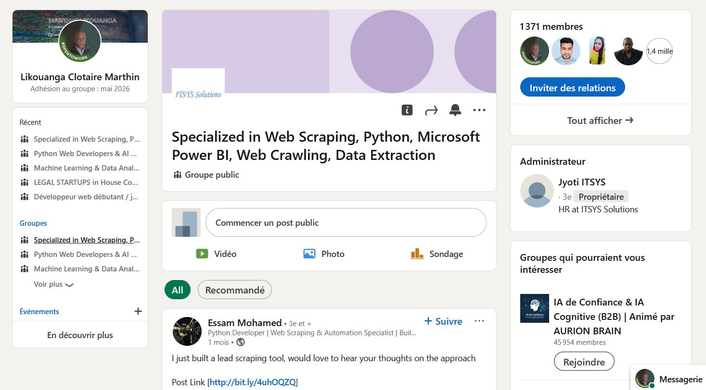
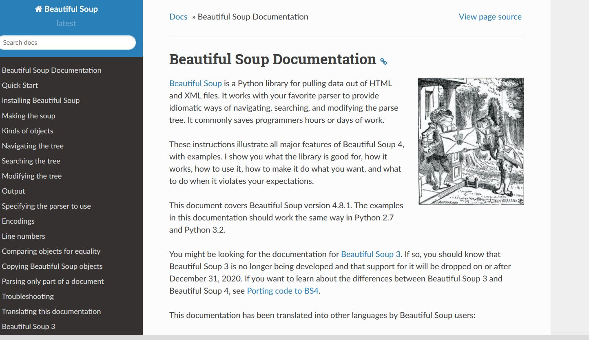
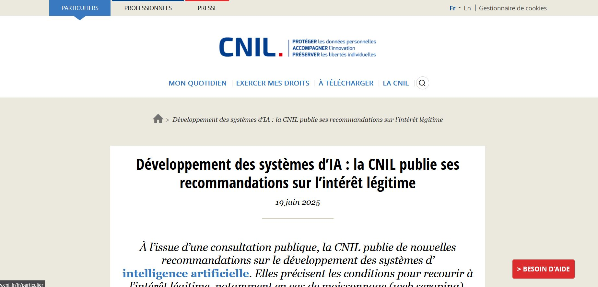

BTS SIO SLAM · Sujet de veille : Web Scraping avec Python – Techniques & Éthique
La collecte automatisée de données est au cœur de la data science, de l'analyse de marché et de la veille concurrentielle. Cette page synthétise ma veille : méthodes de surveillance, actualités juridiques, outils Python et enjeux éthiques.
Problématique : Comment les nouvelles technologies facilitent-elles le web scraping tout en respectant les contraintes légales et éthiques ?
Configurer des alertes Google pour recevoir les dernières actualités directement par e-mail :
web scraping PythonBeautifulSoup updateScrapy newsscraping data ethicsdata extraction regulationCentraliser ses sources dans Feedly pour une lecture quotidienne efficace :
LinkedIn est particulièrement utile pour les aspects éthiques et réglementaires :
Indispensables pour les évolutions techniques Python :





UE · 2018Le Règlement Général sur la Protection des Données interdit de collecter des données personnelles sans consentement explicite. Toute donnée permettant d'identifier une personne (nom, e-mail, photo…) est protégée. Un script Python qui collecte ces données sans base légale est en infraction.
USA · 2019–2022Affaire majeure : HiQ scrapait des profils LinkedIn publics avec des outils Python. La cour a jugé que scraper des données publiquement accessibles ne viole pas le Computer Fraud and Abuse Act (CFAA). Enseignement clé : données publiques ≠ automatiquement légal — tout dépend des CGU et de l'usage.
2023–2025Les grands modèles d'IA (GPT, Llama, Mistral…) ont été entraînés sur des données massivement collectées via des pipelines Python (Scrapy, BeautifulSoup…). Cela soulève des questions juridiques inédites : droits d'auteur, consentement des auteurs, rémunération.
UE · 2024L'AI Act européen impose aux fournisseurs de LLM de déclarer les données d'entraînement, y compris les données scrapées via Python. Première réglementation mondiale à adresser directement le scraping dans le contexte de l'IA.
Tendance 2025Cloudflare, DataDome, PerimeterX... Les solutions anti-bot deviennent de plus en plus sophistiquées (fingerprinting, CAPTCHA IA, honeypots). Les bibliothèques Python comme Selenium et Playwright évoluent pour contourner ces protections de manière éthique.
France · 2024La CNIL a publié en 2024 des recommandations précisant que même les données publiquement accessibles sur le web restent soumises au RGPD dès lors qu'elles permettent d'identifier une personne. Un script Python collectant des profils, adresses e-mail ou numéros de téléphone sur des pages publiques peut donc constituer une violation. La CNIL rappelle l'obligation de finalité : les données ne peuvent être réutilisées à des fins incompatibles avec leur publication originale.
USA · 2024Après la restriction draconienne de son API en 2023, X (anciennement Twitter) a intenté plusieurs actions en justice contre des chercheurs et entreprises utilisant des scripts Python pour collecter des données publiques. Cette affaire illustre la tension croissante entre open data et monétisation des plateformes. Elle pousse la communauté Python à réfléchir à des alternatives éthiques : API officielles payantes, datasets partenaires ou archives institutionnelles.
France · 2024–2025La CNIL a engagé des procédures contre plusieurs acteurs utilisant des pipelines de scraping Python pour constituer des jeux de données d'entraînement de modèles d'IA sans base légale. La commission insiste : collecter des données personnelles pour entraîner un LLM nécessite une base juridique solide (consentement, intérêt légitime démontré). Elle a publié un guide spécifique sur l'IA et la protection des données début 2025.
UE · 2024La Cour de Justice de l'Union Européenne a confirmé dans plusieurs arrêts que le scraping de données personnelles sur des réseaux sociaux, même accessibles publiquement, constitue un traitement au sens du RGPD. Meta a été condamné à plusieurs amendes en Europe pour ne pas avoir suffisamment protégé ses utilisateurs contre le scraping massif de leurs données. Ces décisions font jurisprudence pour tout développeur Python opérant en Europe.
Technique · 2024–2025Scrapy a sorti la version 2.12 en 2024 avec un support amélioré de asyncio, une meilleure gestion des proxies rotatifs et une intégration native avec les pipelines de données modernes. BeautifulSoup 4.13 (début 2025) apporte un parser HTML plus robuste et une meilleure compatibilité avec les pages dynamiques générées côté serveur. Ces évolutions confirment la vitalité de l'écosystème Python pour le scraping.
UE · 2024–2025Le DSA, pleinement applicable depuis 2024, oblige les très grandes plateformes (Google, Meta, TikTok…) à fournir un accès aux données pour la recherche académique via des interfaces officielles. C'est une avancée majeure : les chercheurs n'ont plus à recourir à des scripts Python de scraping illégaux pour étudier ces plateformes. Cela réduit le besoin de scraping, mais soulève de nouvelles questions sur l'accès équitable pour les acteurs non académiques.
France · 2025En 2025, la CNIL a annoncé des contrôles sectoriels ciblant les acteurs du marketing digital qui utilisent des outils de collecte automatisée (Python, scrapers SaaS) pour enrichir des bases de prospection. Plusieurs entreprises françaises ont reçu des mises en demeure pour collecte de données sans consentement via scraping. La CNIL rappelle que l'utilisation de bibliothèques comme requests ou BeautifulSoup ne confère aucune immunité juridique.
Technique · 2024La librairie open-source ScrapeGraphAI a connu une adoption massive en 2024 avec plus de 15 000 étoiles sur GitHub. Elle permet d'extraire des données web en langage naturel grâce aux LLMs (GPT-4, Mistral, Llama) sans écrire de sélecteurs CSS ou XPath. Un simple prompt Python suffit : SmartScraperGraph("Extrais tous les prix", url, config). Cela démocratise le scraping mais pose de nouvelles questions éthiques sur l'automatisation à grande échelle.
Technique · 2025Playwright pour Python a franchi la version 1.45 en 2025, consolidant sa position de référence face à Selenium. Les nouvelles fonctionnalités incluent le mode stealth amélioré, la gestion des WebSockets pour scraper des données en temps réel, et un enregistreur de code Python intégré (codegen) qui génère automatiquement les scripts de scraping en observant la navigation. Microsoft, qui maintient le projet, a annoncé une feuille de route intégrant des capacités IA pour 2026.
Le duo classique Python pour les pages HTML statiques.
requests.get(url) — envoie la requête HTTPfind() pour cibler les élémentsLe framework Python de référence pour le scraping à grande échelle.
Pilote un vrai navigateur depuis Python pour les sites JavaScript-heavy.
webdriver.Chrome() — lance le navigateurAlternative moderne à Selenium — plus rapide, plus stable, 100% Python.
asynciopip install playwright — installation simpleIndispensable en Python après la collecte pour exploiter les données.
dropna(), fillna(), str.strip()groupby(), pivot_table()to_csv(), to_excel(), to_json()Alternatives modernes pour des scripts Python plus performants.
httpx — client HTTP async, compatible asynciolxml — parsing HTML/XML ultra-rapide en PythonL'intelligence artificielle s'intègre directement dans les pipelines Python de scraping :
Des librairies comme ScrapeGraphAI utilisent des LLMs directement en Python pour extraire automatiquement les données pertinentes sans écrire de sélecteurs CSS.
| ✔️ Bon usage | ❌ Mauvais usage |
|---|---|
| Veille concurrentielle (prix publics) | Vol de contenu protégé par copyright |
| Agrégation de données publiques ouvertes | Scraping massif (surcharge des serveurs) |
| Recherche académique avec anonymisation | Collecte de données personnelles sans consentement |
| Archivage de pages publiques | Contournement de systèmes d'authentification |
| Respect du robots.txt et des CGU | Revente de données sans autorisation |
Délais entre requêtes avec time.sleep() | Usurpation d'identité (fake User-Agent agressif) |
robots.txt du site cibletime.sleep() entre les requêtesAutorité française de contrôle de la protection des données personnelles.
Organe européen qui coordonne l'application du RGPD entre les États membres.
Python, grâce à ses bibliothèques spécialisées, facilite grandement le web scraping — mais cette puissance impose une responsabilité : respecter le cadre légal (RGPD, CGU) et adopter une démarche éthique, transparente et proportionnée.
— Réflexion personnelle, veille BTS SIO SLAMQuand préférer une API au scraping ?